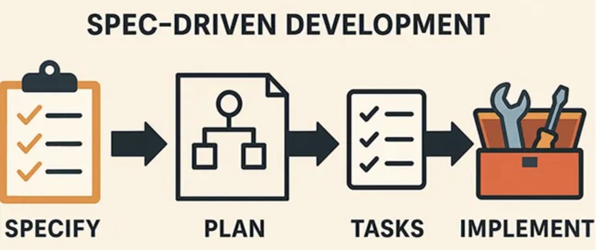

### Codegen 2.0 “Remember that code is really the language in which we ultimately express the requirements. We may create languages that are closer to the requirements. We may create tools that help us parse and assemble those requirements into formal structures. But we will never eliminate necessary precision — so there will always be code.” ― Robert C. Martin // Name: Jukka Nikki, Identity: Programmer // Goal: Learn new skills, Since: 6502
<img alt="nc 1990" src="images/gigo_1.png" width="50%"> "On two occasions I have been asked, "Pray, Mr. Babbage, if you put into the machine wrong figures, will the right answers come out?" ... I am not able rightly to apprehend the kind of confusion of ideas that could provoke such a question." — Charles Babbage
 Spec-driven development means writing a “spec” before writing code with AI. The spec becomes the source of truth for the human and the AI. Spec has aspects like architecture, domain models, requirements and can be refined over time.
### Possible Use-cases? <img alt="nc 1990" src="images/sdd-usecases.png" width="80%"> - Complete solution from spec (e.g. feature, module) - Reverse engineer legacy (code as spec) - Spec as DSL for business logic
### Levels of Spec-driven Development - Spec-first: A well thought-out spec is written first, and then used in the AI-assisted development workflow for the task at hand. - Spec-anchored: The spec is kept even after the task is complete, to continue using it for evolution and maintenance of the respective feature. - Spec-as-source: The spec is the main source file over time, and only the spec is edited by the human, the human never touches the code.
<img alt="nc 1990" src="images/sdd-levels.png" width="80%"> - Quality of results rely on input spec quality. - Level defines process AI tool is able to support.
### SDD is non-deterministic "Spec drift and hallucination are inherently difficult to avoid. We still need highly deterministic CI/CD practices to ensure software quality and safeguard our architectures." - Liu Shangqi None of the current best practices like unit tests, CI/CD pipelines, Linting, autoformatting, modular architecture, code reviews, etc. are outdated by SDD. They are more important than ever.
#### Workflow: No silver bullet <img alt="nc 1990" src="images/sdd-workflow.png" width="45%"> there’s a lack of consensus on the ‘correct’ spec-driven development workflow and what exactly a good spec should look like in the context of AI-assisted coding.
#### Bold predictions Businesses that rely solely on AI-generated code without structured specs accumulate hallucinated logic, inconsistent patterns, and unpredictable failures. But those that adopt SDD will shift from code ownership – where engineers fight to keep implementations aligned to intent ownership – where specifications drive the entire lifecycle.
# Summary - Spec-driven development (SDD) is an emerging paradigm that leverages AI to generate code from structured specifications. - SDD can improve code quality, maintainability, and alignment with business goals. - Successful adoption of SDD requires new workflows, tools, and mindsets.